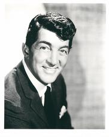

|
Dean Martin
1917-1995
Actor,
singer; born Dino Paul Crocetti, in Steubenville, Ohio on June 7, 1917, the younger
of two sons born of Italian immigrants. Had one brother, Bill.
Best known for his comedic partnership with Jerry Lewis, as well as for his
participation in the "Rat Pack," a group of entertainers-including Frank Sinatra,
Sammy Davis, Jr., Joey Bishop, and Peter Lawford-who performed together in Las
Vegas and teamed up in several films in the early 1960s.
Martin attended Grant Elementary School in Steubenville, Ohio, and took up
the drums as a hobby as a teenager. After dropping out of Steubenville High School
in the tenth grade, he worked odd jobs, including part-time as an amateur welterweight
boxer under the name "Kid Crochet." Martin also dabbled in illegal activities,
including driving liquor across state lines during prohibition, selling lottery
tickets, acting as a bookie, and working as a card dealer and croupier in local
gambling joints.
Martin began his show business career at age seventeen, singing in Ohio nightclubs
near his hometown. During a stint with the Ernie McKay band, he was noticed by
Cleveland bandleader Sammy Watkins, who hired him as the band’s featured vocalist.
He began touring with Watkins in 1938, and in 1940, changed his name to Dean Martin.
In September 1943, Martin signed an exclusive contract with MCA to sing at the
Riobamba Room in New York, and in 1944 he was given his own fifteen-minute radio
program broadcasting from New York City, Songs by Dean Martin. In 1946 he signed
a contract and recorded four songs with Diamond Records.
During a club engagement in 1946, Martin met Jerry Lewis and the two began
joking around with each other during their respective acts. They teamed up in
1947, with Martin playing the straight man to Lewis's clown. NBC broadcast a regular
thirty-minute radio program featuring the pair in 1949, and they made their television
debut in the Colgate Comedy Hour in 1950. The immensely popular Martin and Lewis
team made sixteen films together between 1949 and 1956.
Martin
and Lewis last performed together at the Copacabana in New York, on July 24, 1956.
After ten years as a team, they split up due to creative differences. Martin struck
out on his own and resumed his singing career, recording such hit records for
Capitol as "That's Amore," "Memories are Made of This," "When You're Smiling,"
and "Oh Marie." He also resumed acting in films, and in 1958, Martin received
critical acclaim after appearing with Montgomery Clift and Marlon Brando in The
Young Lions.
It was around this time
that Martin began performing in Las Vegas with a group of close friends who were
members of a Hollywood clique known as "The Rat Pack." The group, which included
Martin, Frank Sinatra, Sammy Davis, Jr., Joey Bishop, and Peter Lawford, soon
branched out from Vegas to the movies. They starred as an ensemble cast in the
caper film Ocean's Eleven (1960), followed by Sergeants Three (1962) and Robin
and the Seven Hoods (1964).
Martin appeared in a total
of fifty-one films in his lifetime, including Some Came Running (1958) with Shirley
MacLaine and Frank Sinatra, Bells Are Ringing (1960) with Judy Holliday, Rio Bravo
(1959) with John Wayne, Toys in the Attic, (1963), Airport (1970), Cannonball
Run (1981) and Cannonball Run II (1984).
In 1962, Martin left Capitol
Records and signed with Reprise. In 1964, he recorded his blockbuster hit, "Everybody
Loves Somebody," which beat the Beatles to become the No. 1 hit in America for
one week. It became the theme song for his television variety series, The Dean
Martin Show, which ran on NBC for eight years starting in 1965. Martin followed
this with The Dean Martin Comedy Hour, which ran from 1973 to 1974. An indelible
part of Martin's television "schtick" was his comedic portrayal of life as an
alcoholic lush, which many people never realized was just an act.
Martin
was married three times, first to wife Elizabeth Anne McDonald on October 2, 1941.
The couple had four children: Stephen (Craig), born June 29, 1942; Claudia, born
March 16, 1944; Barbara (Gail), born April 11, 1945; and Deana (Dina), born August
19, 1948. He married second wife Jeanne Biegger on September 1, 1949 and had three
children: Dino Paul Jr., born November 17, 1951; Ricci James, born September 20,
1953; and Gina Caroline, born December 20, 1956. In 1973, Martin married third
wife Catherine Mae Hawn, and adopted a daughter Sasha. Their marriage ended in
1976. Martin suffered a tragic
loss when his son, Dino Jr., was killed in a plane crash during a military training
exercise in 1987. He retired from show business after a 1988-89 concert tour with
fellow rat-packers Sammy Davis, Jr. and Frank Sinatra, which ended for Martin
after he became ill and was replaced by Liza Minelli for the remainder of the
tour. Martin died of acute respiratory failure in Beverly Hills on December 25,
1995.
|